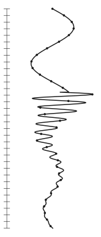
When you flick a light switch, close a circuit breaker, or lightning strikes a line, the voltages and currents in the network do not jump straight to their new values. For a few milliseconds they swing, overshoot and ring before they settle down. These short events are called electromagnetic transients, and EMT simulation is the way we calculate them on a computer.
Most power-system tools, such as load flow and short-circuit programs, work with phasors. A phasor describes a sine wave that has been running forever with a fixed amplitude and phase. That is perfect for the steady state, but it cannot tell you what happens in the first few milliseconds after a switch closes, because nothing is a steady sine wave yet.
The good news is that EMT simulation is built from things you already know: Ohm's law, Kirchhoff's current law, and the two equations of the inductor and the capacitor. There is only one new trick, called the companion model, and it is much simpler than it sounds.
Going through a simple example is the best way to understand EMT simulation. Here is one such example.
Imagine you want to tell a friend how a child on a swing is moving. You could give them one photo of the swing with a note on the back: "it swings one metre each way, once every two seconds." That is a phasor: one picture, plus an amplitude and a frequency. It works perfectly, as long as the swing keeps moving the same way.
Now someone gives the swing a hard push. Your photo cannot tell your friend what happens next. For that you need a movie: one picture every fraction of a second, where each picture follows from the one before it.
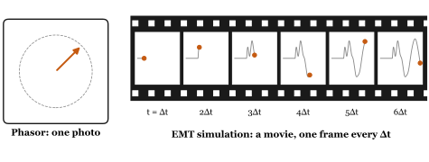
EMT simulation is the movie. We calculate the network at one small time step Δt after another, and each step is calculated from the step before it. A small Δt gives a smooth movie but needs more frames, which means more work. Typical time steps are 20 to 100 μs for switching studies, a few μs for power electronics, and well below a microsecond for lightning.
Figure 2 shows the circuit we will simulate: a 10 V battery, a switch, a 1 Ω resistor and a 1 mH inductor. Everything is at rest, and the switch closes at t = 0. What is the current i(t)?
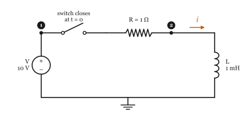
This circuit is simple enough to solve with pen and paper, and that is exactly why we use it: the exact answer lets us check our simulation.
The current rises towards V/R = 10 A, and reaches 63 % of it after one time constant τ = 1 ms. Our goal is to get the same answer without solving any differential equation: only arithmetic with resistors.
We choose a time step Δt = 0.1 ms and calculate the circuit only at t = Δt, 2Δt, 3Δt and so on. The resistor is easy: at every instant its current is its voltage divided by R. The inductor is the troublemaker:
This equation links the current now to how the current was changing a moment ago. To handle it we need the companion model.
"Companion model" sounds complex, but it is not.
Rearrange the inductor equation and add up (integrate) the voltage over one time step:
We do not know exactly how v changes inside the step, so we approximate the integral by the area of a trapezoid, as in Figure 3. This is called the trapezoidal rule.
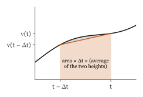
Put (2) into (1) and sort the terms into the ones that belong to now and the ones that belong to the last step:
Look at the two parts of (3). The first part is a conductance Δt/2L multiplied by the voltage now. That is exactly how a resistor behaves, with resistance
The second part, in the brackets, only contains values from the last step, which we already know. We call it the history current. A current that is already known is simply a current source. So we can write (3) as
That is the whole trick. For one time step, an inductor is a resistor in parallel with a current source. The resistor never changes (as long as Δt does not change); only the current source is updated at every step. The capacitor gets the same treatment from i = C dv/dt, with RC = Δt/2C and a history current with the opposite sign (Figure 4).
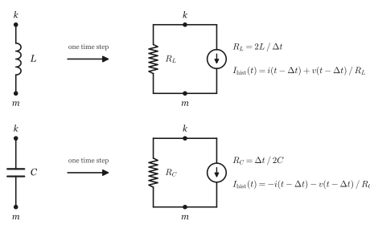
For our inductor, .
Replace the inductor in Figure 2 with its companion model. Now the circuit contains only a battery, resistors and a current source (Figure 5), and we can solve it with nothing but Ohm's law.
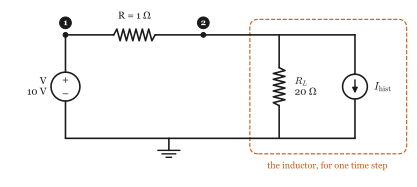
The voltage of node 1 is known: it is the battery voltage V. The voltage of node 2, v2, is unknown. Kirchhoff's current law at node 2 says that the current arriving through R leaves through the companion model:
Once we have v2, the inductor current follows from (4).
Before t = 0 everything is at rest: i = 0 and v2 = 0. Now let us go through the first steps. Here, I tried not to skip any steps, so you can follow every one of them.
Step 1, t = 0.1 ms
The history current comes from the last step, when everything was at rest:
Step 2, t = 0.2 ms
Now the history current uses the results of step 1:
Step 3, t = 0.3 ms
Every step is the same three lines: history current, node voltage, branch current. A computer does exactly this, only many thousands of times. Try calculating steps 4 and 5 yourself; Table 1 has the answers.
| step | t (ms) | Ihist (A) | v2 (V) | i (A) | exact i (A) |
|---|---|---|---|---|---|
| 1 | 0.1 | 0.0000 | 9.5238 | 0.4762 | 0.9516 |
| 2 | 0.2 | 0.9524 | 8.6168 | 1.3832 | 1.8127 |
| 3 | 0.3 | 1.8141 | 7.7961 | 2.2039 | 2.5918 |
| 4 | 0.4 | 2.5937 | 7.0536 | 2.9464 | 3.2968 |
| 5 | 0.5 | 3.2990 | 6.3819 | 3.6181 | 3.9347 |
| 6 | 0.6 | 3.9372 | 5.7741 | 4.2259 | 4.5119 |
| 7 | 0.7 | 4.5146 | 5.2242 | 4.7758 | 5.0341 |
| 8 | 0.8 | 5.0370 | 4.7266 | 5.2734 | 5.5067 |
| 9 | 0.9 | 5.5097 | 4.2765 | 5.7235 | 5.9343 |
| 10 | 1.0 | 5.9374 | 3.8692 | 6.1308 | 6.3212 |
Figure 6 puts the simulated current next to the exact one. After a few steps the simulation follows the exact curve closely, but always slightly behind it. Why?
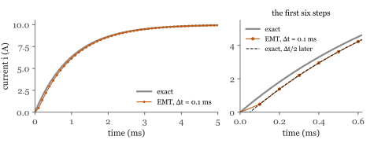
Look at step 1 again. The trapezoidal rule assumed that the inductor voltage rose in a straight line from 0 V (at t = 0, when everything was at rest) to 9.52 V. In reality it jumped to 10 V the moment the switch closed. A voltage that rises in a straight line over one step is, on average, the same as a voltage that jumps in the middle of the step. So the simulation behaves as if the switch had closed half a step late, at Δt/2. Shift the exact curve by Δt/2 and the two agree very well (right of Figure 6). Making Δt smaller makes the delay smaller:
| Δt (ms) | simulated i (A) | error (A) | error against the curve delayed by Δt/2 (A) |
|---|---|---|---|
| 0.5 | 5.2000 | 1.12121 | 0.07633 |
| 0.1 | 6.1308 | 0.19039 | 0.00177 |
| 0.02 | 6.2842 | 0.03704 | 0.00006 |
The lesson: Δt must be small compared with the fastest thing you want to see. Here the time constant is 1 ms, and a step of 0.1 ms is plenty.
Real networks have many nodes, and writing Kirchhoff's law by hand for each of them gets old quickly. The computer does it with a matrix. Figure 7 shows a slightly bigger circuit: a 100 V, 50 Hz source feeding a line (R1 and L), a cable that adds capacitance C, and a 100 Ω load. The time step is Δt = 50 μs.
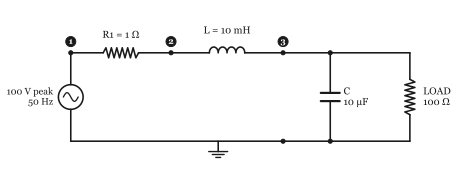
First, every element becomes a conductance (one over its resistance in the companion model):
| element | between nodes | conductance |
|---|---|---|
| R1 = 1 Ω | 1 and 2 | 1/1 = 1 S |
| L = 10 mH | 2 and 3 | Δt/2L = 0.0025 S |
| C = 10 μF | 3 and ground | 2C/Δt = 0.4 S |
| LOAD = 100 Ω | 3 and ground | 1/100 = 0.01 S |
Then each one is "stamped" into the matrix G with one simple rule: a conductance g between nodes k and m adds g to Gkk and Gmm, and subtracts g from Gkm and Gmk. If one end is ground, only the diagonal entry is touched. After all four stamps:
Kirchhoff's current law for every node at once is then
where v holds the node voltages and i holds the currents injected into each node by the history current sources. A history current Ihist flowing from node k to node m takes Ihist out of ik and puts it into im.
The source fixes the voltage of node 1, so node 1 is known. Nodes 2 and 3 are unknown. Split G into the rows and columns of the unknown (U) and known (K) nodes:
and solve only for the unknown voltages:
Here is the beautiful part: G does not change from one step to the next. Only the right-hand side does. So the computer factorises GUU once (EMTSim uses an LU or LDLT factorisation) and then every step is just a quick substitution. That is why an EMT program can run millions of steps.
Step 1, t = 50 μs
The source voltage is . Everything was at rest before, so all history currents are zero and iU = 0.
So after the first step, node 2 is at 99.74 V and node 3 is still almost at 0 V. The current through the inductor is , and the capacitor current is .
Step 2, t = 100 μs
The history currents, from (4) and Figure 4:
Ihist,L flows from node 2 to node 3, and Ihist,C from node 3 to ground, so
And so on, step after step. Figure 8 shows the voltage of node 3 for the first 80 ms. When the source is switched on, the inductor and the capacitor exchange energy at their natural frequency ; the voltage overshoots to 153.2 V before the load damps the ringing and the steady state, which a phasor calculation would give, takes over.
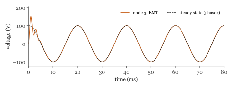
Put together, an EMT program is a loop over these steps. This is exactly the order EMTSim uses:
A switch is simply a resistor that changes its value: a very small resistance when it is closed (EMTSim uses 0.01 Ω) and a very large one when it is open (1 MΩ). A fault is a switch from a node to ground. When it changes state, its conductance changes, so G changes. That is step 1 of the time loop: rebuild G, factorise it again, and carry on. The history currents are not touched, so the inductors and capacitors remember their current and voltage across the switching instant, just as they do in real life.
Let us put a fault on node 3 of our network at 30 ms and clear it at 60 ms (Figure 9).
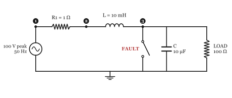
While the fault is open, it adds 1/106 S to G33. When it closes, it adds 1/0.01 = 100 S:
Figure 10 shows the result. When the fault is applied, node 3 collapses to almost zero and the capacitor discharges into the fault. The current in L grows to about 32.3 A, limited mostly by the inductor. When the fault is cleared, the capacitor and the inductor ring again at about 503 Hz before the network settles back to its steady state.
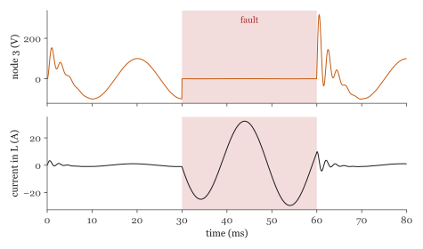
Everything in this book was calculated with the same steps that EMTSim uses, and checked against it: EMTSim gives the same numbers, to the last digit. You can run every example yourself. An EMTSim netlist has one line per element: the type, the nodes it connects (0 is ground) and its value. This is the circuit of chapter 3:
# Tiny book of EMT simulation, chapter 3: closing a switch on a 10 V battery, 1 ohm, 1 mH. # The circuit is at rest before t = 0; the battery is connected at t = 0. .tran 0.0001 0.005 V 0 1 10 0 0 # BATTERY (peak 10 V, angle 0, frequency 0 = DC) R 1 2 1 # R L 2 0 0.001 # L
and this is the network with the fault, from chapter 5:
# Tiny book of EMT simulation, chapter 5: the network of chapter 4 with a fault at node 3 # from 30 ms to 60 ms. .tran 0.00005 0.08 V 0 1 100 0 50 # SOURCE R 1 2 1 # R1 L 2 3 0.01 # L C 3 0 10e-6 # C R 3 0 100 # LOAD F 3 0 0.03 0.06 # FAULT
Run them from the EMTSim folder with either solver:
build\emtsim.exe docs\book\circuits\rl.net python main.py docs\book\circuits\network_fault.net python plot.py
The node voltages are written to results.csv and the element currents to
currents.csv. Compare the first lines of results.csv with Table 1. You can
also open the circuit editor with gui.bat, draw the circuit, press Run, and drag across a
plot to zoom into the first few steps.
Then try changing things. Make Δt ten times bigger and see the error grow. Move the fault to node 2. Change the load to 10 Ω and watch the ringing die out faster.
So far, we have only closed switches. Let us take the circuit of chapter 3 again, wait until the current has almost reached 10 A, and open the switch at t = 3 ms (Figure 11).
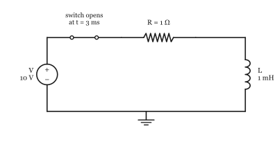
In a real circuit, the current in an inductor cannot stop instantly. When the switch opens, the inductor drives the voltage across the opening contacts up very high (that is why breakers draw arcs), and the current falls to zero very quickly. Now look at what our simulation says (Figure 12).
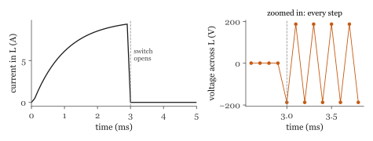
The current looks fine: just before the switch opens it is 9.35 A, and from the next step on it is practically zero (less than 0.0002 A). But look at the voltage across the inductor. Just before the opening it is 0.56 V. In the steps after it, the simulation gives −187.5, 187.5, −187.4, 187.4, −187.4 V, and so on, flipping sign at every single step for as long as we care to simulate. No current flows, and yet the inductor voltage keeps jumping between plus and minus 187 V.
Does the voltage in the real circuit do that? Or is it our simulation? Try equation (4) with the 1 MΩ of the open switch in series with RL = 20 Ω, and see what happens to Ihist from one step to the next.